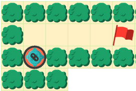
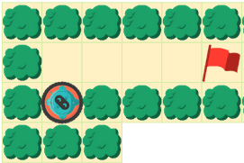

Boucles
Programmez le robot pour qu'il rejoigne le drapeau sans toucher les buissons.
Pour cela, placez des flèches dans toutes les cases grises.
Appuyez sur les boutons noirs pour régler le nombre de répétitions des boucles.
Programmez le robot pour qu'il rejoigne le drapeau sans toucher les buissons.
Pour cela, placez des flèches dans toutes les cases grises.
Appuyez sur les boutons noirs pour régler le nombre de répétitions des boucles.
Ce défi consiste en un sujet de programmation faisant intervenir des boucles
pour effectuer des répétitions. Les boucles sont un ingrédient essentiel dans l'écriture des programmes en général.

 
